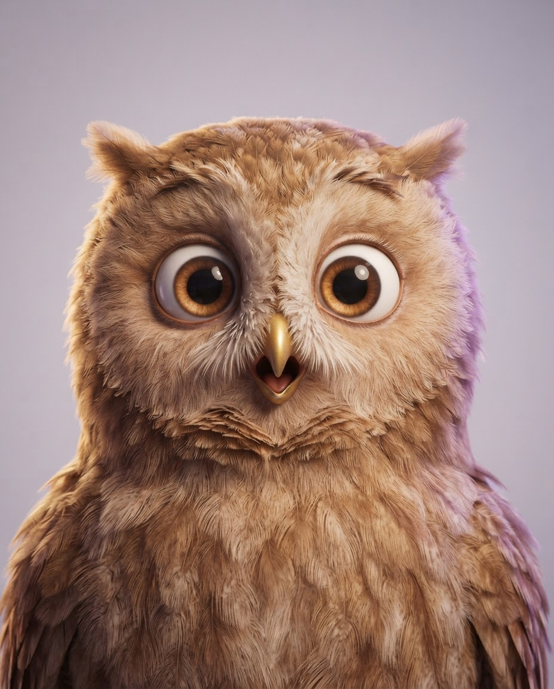

designing for delight
I'm a product designer curious about why people do what they do, turning those insights into thoughtful, beautiful experiences. I find the quick wins fast, then shape them into systems that scale.
Selected work
Add Tech Interactive preview image



Playground